The simple case in assembling vector-valued problems is when the (also vector-valued) shape functions are chosen such that only one component in the vector is nonzero. This is usually the case, if we choose the shape functions to be the outer product of scalar shape functions, such as independent bilinear ansatz spaces for each component of a finite element space.
In this case, each shape function  has the representation
has the representation
| 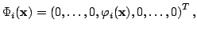 |
With this simple form, the cell matrix on cell  has a simple form:
has a simple form:
In deal.II, these two actions mentioned above (getting the non-zero component of a shape function, and the value of this component at a given quadrature point) are done as follows:
const unsigned int nonzero_component_i
= fe.system_to_component_index(i).first;
The FiniteElement::system_to_component_index returns a pair of
numbers for each index
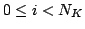, the first of which denotes the only
non-zero component of the shape function
If, for example, our finite element in use is a
 combination
(for example for 2d flow computations: bi-quadratic ansatz functions for the
velocities, bi-linear for the pressure), then we have a total of 22 shape
functions (9+9+4). For each
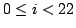, the first part of the pair
returned by the function described above,
combination
(for example for 2d flow computations: bi-quadratic ansatz functions for the
velocities, bi-linear for the pressure), then we have a total of 22 shape
functions (9+9+4). For each
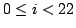, the first part of the pair
returned by the function described above,  , may then either be 0, 1,
or 2, denoting the three possible components of the finite element. If
, may then either be 0, 1,
or 2, denoting the three possible components of the finite element. If
 is either 0 or 1, then the component to which the shape function
is either 0 or 1, then the component to which the shape function  belongs is a bi-quadratic one, and the second index is between 0 and 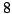
(inclusive) as the 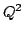 element has 9 shape functions. If 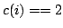, then
the second part is between 0 and 3 (inclusive).
belongs is a bi-quadratic one, and the second index is between 0 and 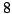
(inclusive) as the 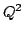 element has 9 shape functions. If 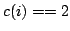, then
the second part is between 0 and 3 (inclusive).
In other words, whether the finite element is scalar or not, the two
indicated functions return value and gradient of the only non-zero component
of a shape function. If the finite element is scalar, then it is of course
clear which component this is (since there 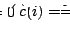 for all valid indices
 ), in the vector-valued case, it is component
), in the vector-valued case, it is component  .
.